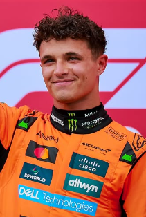

Lando Norris
Lando Norris
Team: McLaren
Team Principal: Andrea Stella
Number: 1
Nationality: United Kingdom
Debut: 2019
Born: 13 November 1999
History: British driver Lando Norris emerged as one of the leading stars of Formula 1 after years of steady progression with McLaren. Known for his smooth driving style, technical feedback, and strong qualifying performances, Norris transformed from a promising young talent into a world championship contender. His breakthrough title-winning campaign in 2025 cemented his reputation as one of the most complete drivers on the grid. Combining consistency, composure under pressure, and strong leadership qualities, Norris entered 2026 as the centerpiece of McLaren’s ambitions to remain at the front of Formula 1.
